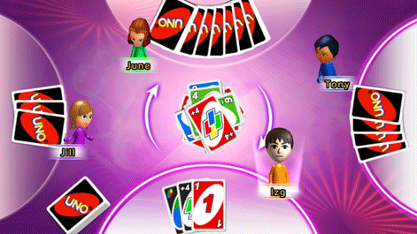

22 |
Summary of Play (Hoe speel je) |
 |
|
Iedere speler krijgt 7 kaarten en de overgebleven kaarten worden omgekeerd in het midden van de tafel gelegd. Deze kaarten vormen de stapel waarvan je een kaart kunt trekken. De bovenste kaart van de stapel wordt omgedraaid en vormt de stapel van weggegooide kaarten.
De eerste speler kiest een kaart uit zijn/haar hand van dezelfde kleur, met hetzelfde nummer of symbool (Draw Two, Reverse, Skip) als zijnde de bovenste kaart van de stapel voor weggegooide kaarten. De kaart van de eerste speler wordt weggelegd op de stapel van weggegooide kaarten en de volgende speler moet een soortgelijke kaart weggooien. Bijvoorbeeld: na het delen wordt er een rode drie omgedraaid, de speler links naast de deler mag een willekeurige rode kaart spelen of een kaart nummer drie van een andere kleur. Wanneer de eerste kaart die omgedraaid wordt een actiekaart is, begint het spel als volgt: Wild Draw Four kaart Deze kaart wordt weer in de stapel gelegd en er wordt een andere kaart getrokken. Wild kaart De speler links naast de deler bepaalt de kleur en speelt vervolgens een kaart. Draw Two kaart De speler links naast de deler trekt twee kaarten en de beurt is aan de volgende speler. Reverse kaart De deler speelt als eerste en het spel wordt rechts voortgezet (andere speelrichting). Skip kaart De speler links naast de deler wordt ge-‘skipped’ (overgeslagen) en de beurt is aan de volgende speler. De speler mag ook een ‘Wild’ kaart of ‘Wild Draw Four’ kaart spelen. Als een speler geen kaart kan spelen, moet hij/zij een kaart trekken en die kaart spelen mits hij gelijk is en de gekozen regels dit toelaten. Als hij/zij vervolgens nog steeds geen kaart kan spelen, is de beurt aan de volgende speler. Speciale actiekaarten voegen meer spanning toe aan het spel door de spelrichting te veranderen, de volgende speler een beurt over te laten slaan of de volgende speler een aantal extra kaarten te laten trekken. Omdat de kaarten dusdanig aangeduid zijn dat je ze meteen begrijpt, kun je na een paar spelletjes al expertspeler zijn. Naarmate je speelt, ontdek je de mogelijkheden en strategieën voor de verschillende kaarten in de stapel en hierdoor wordt het spel steeds spannender.  |
 |
 |
 |